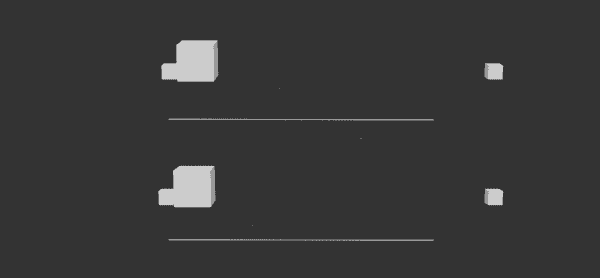
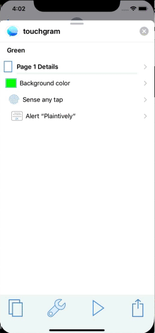

Anyone can Animate
(Even if they can’t draw)
Andy Dent’s
strongly-held opinions
weakly-held pencils
Animation as Life?
(but not as we know it)
See lots of links on my github site (also be on the last slide)
- Val Head’s book Interface Animation, videos etc
- Disney’s book The Illusion of Life
- As video and gifs 8 of which follow
- Really good article illustrating them with longer clips from Disney and Pixar movies, and explanations
Principle 1 - Squash and Stretch
Principle 2 - Anticipation
Principle 5 - Follow Through & Overlapping
Principle 6 - Slow In and Slow Out

Principle 7 - Arcs

Principle 8 - Secondary Action
Principle 9 - Timing

Principle 10 - Exaggeration

Why Animate? - Designers
Amuse
Distract
Inform
Why Animate? - Designers
Amuse
Distract
Inform
Why Animate? - Designers
Amuse
Distract
Inform
Why Animate? - Developer’s View
D istract
I nform
E ntertainAnimation as a new Developer Hell
Animation’s aren’t the only thing that go in circles.
The designer-developer loop finds new things to design that have to be manually translated to code.
and then the loop closes
Coming to save us (last time)

New Breed of Tools
Start with Sketch or other vector prototype
Add animation
Generate working codeWeb world
SVG-based vectors
Pure CSS
GSAP Greensock JS-driven canvas
and…Lottie
Simple animated vectors from Adobe After Effects via bodymovin plugin to JSON, effectively a standard
Fast native & web players by AirBnb
Other editors such as Haiku and Keyshape
As seen on the Why Animate? - Designers slide, content from lottiefiles.com
Mostly Mobile Tools
FlowSimple Animation Example
Supernova Editor

Supernova Generated - Swift
let animationElement1 = CAAnimationGroup()
animationElement1.isRemovedOnCompletion = false
animationElement1.fillMode = .removed
animationElement1.animations = []
let animationProperty1 = CAKeyframeAnimation()
animationProperty1.beginTime = 0
animationProperty1.repeatCount = Float(1)
animationProperty1.duration = 1
animationProperty1.autoreverses = false
animationProperty1.isRemovedOnCompletion = false
animationProperty1.timingFunction = CAMediaTimingFunction(controlPoints: 0.22, 0.61, 0.61, 1)
animationProperty1.keyPath = "transform.translation.y"
animationProperty1.keyTimes = [ 0, 0.6, 0.75, 0.9, 1 ]
animationProperty1.values = [ 3000, -25, 10, -5, 0 ]
animationProperty1.animations?.append(animationProperty1)Supernova Generated - Kotlin
val animator1 = ObjectAnimator.ofPropertyValuesHolder(addItemMenuPopupConstraintLayout, PropertyValuesHolder.ofKeyframe(View.TRANSLATION_Y, Keyframe.ofFloat(0f, TypedValue.applyDimension(TypedValue.COMPLEX_UNIT_DIP, 3000f, this.resources.displayMetrics)), Keyframe.ofFloat(0.6f, TypedValue.applyDimension(TypedValue.COMPLEX_UNIT_DIP, -25f, this.resources.displayMetrics)), Keyframe.ofFloat(0.75f, TypedValue.applyDimension(TypedValue.COMPLEX_UNIT_DIP, 10f, this.resources.displayMetrics)), Keyframe.ofFloat(0.9f, TypedValue.applyDimension(TypedValue.COMPLEX_UNIT_DIP, -5f, this.resources.displayMetrics)), Keyframe.ofFloat(1f, TypedValue.applyDimension(TypedValue.COMPLEX_UNIT_DIP, 0f, this.resources.displayMetrics))))
animator1.duration = 1000
animator1.interpolator = PathInterpolatorCompat.create(0.22f, 0.61f, 0.61f, 1f)
val animator2 = ObjectAnimator.ofPropertyValuesHolder(addItemMenuPopupConstraintLayout, PropertyValuesHolder.ofKeyframe(View.ALPHA, Keyframe.ofFloat(0f, 0f), Keyframe.ofFloat(0.6f, 1f), Keyframe.ofFloat(1f, 1f)))
animator2.duration = 1000
animator2.interpolator = PathInterpolatorCompat.create(0.22f, 0.61f, 0.61f, 1f)
val animatorSet1 = AnimatorSet()
animatorSet1.playTogether(animator1, animator2)
animatorSet1.setTarget(addItemMenuPopupConstraintLayout)
val animatorSet2 = AnimatorSet()
animatorSet2.playTogether(animatorSet1)
animatorSet2.start()Supernova Generated - React Native
this.state.addItemMenuPopupViewTranslateY.setValue(0)
this.state.addItemMenuPopupViewOpacity.setValue(0)
// Configure animation and trigger
Animated.parallel([Animated.parallel([Animated.timing(this.state.addItemMenuPopupViewTranslateY, {
duration: 1000,
easing: Easing.bezier(0.22, 0.61, 0.61, 1),
toValue: 1,
}), Animated.timing(this.state.addItemMenuPopupViewOpacity, {
duration: 1000,
easing: Easing.bezier(0.22, 0.61, 0.61, 1),
toValue: 1,
})])]).start()Further Details
Contains this presentation and links to all tools mentioned, full samples and media to build anything shown in the movies.
Twitter: @andydentperth